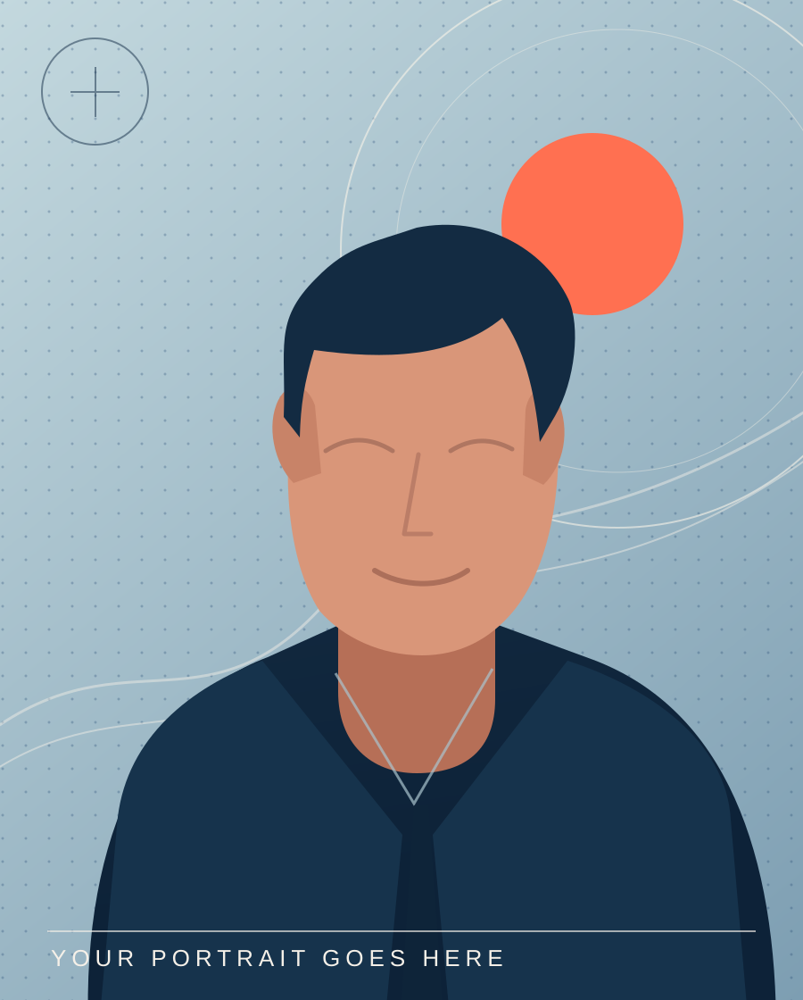

✳BACKEND DEVELOPMENT INTELLIGENT APPLICATIONS INTERFACES THAT FEEL RIGHT[ 01 — 05 ]
BUILD / EXPLORE / REFINE

RR®PERSON BEHIND THE PROJECTS
FIG. 01 — A HUMAN IN THE LOOP.YOUR PHOTO GOES HERE
BASED IN KERALA, INDIA — OPEN TO POSSIBILITIES
PROBLEM SOLVING✳ENGINEERING✳CREATIVE THINKING✳REAL-WORLD IMPACT✳PROBLEM SOLVING✳ENGINEERING✳CREATIVE THINKING✳REAL-WORLD IMPACT✳
01 A LITTLE ABOUT ME/ PROFILE
A little code. A lot of curiosity.
Always learning. Always making.
I’m Rahil Roshan, a Computer Science & Engineering graduate who enjoys turning difficult ideas into software that feels effortless to use.
From designing secure Django REST APIs to exploring camera-assisted navigation and AI-powered experiences, I care about both the system underneath and the person using it.
I approach every project with the same mindset: understand the problem, simplify the complexity, and build with intention.
✳GOOD ENGINEERING IS HUMAN-CENTERED.
01 /BUILDReliable foundations
02 /THINKBeyond the obvious
03 /REFINEEvery little detail
02 SELECTED WORK/ CASE STUDIES
Things I’ve made.
Not just code for the sake of code. Projects shaped by questions worth solving.
FIELD NOTE / 01EXPERIMENTAL APPLICATION
INDOOR NAV / FLOOR 01 ROUTE PREVIEW
PATH IDENTIFIEDA* / CAMERA / NODES
A DIFFERENT WAY TO FIND YOUR WAY.
01 / 03FLAGSHIP PROJECT
COMPUTER VISION + MOBILE
Indoor Wayfinder.
Exploring more intuitive navigation in indoor spaces through a Flutter camera interface, on-device image classification, and A* pathfinding.
FLUTTERYOLOv8TFLITEA* SEARCH
THE IDEAHelp people navigate unfamiliar spaces with more confidence.
02 / BACKEND SYSTEM DRF
expenses.api
GET/api/expenses/
{
"results": [
{ "category": "food",
"payment": "upi" }
]
}
AUTHENTICATED • FILTERABLE • CLEAN
API DEVELOPMENTNO. 02
Expense Tracker API
A Django REST Framework service with user-specific data access, authentication, CRUD operations, and practical search and filtering tools.
PYTHONDJANGO RESTMYSQL / SQL
03 / INTELLIGENT PRODUCT AI
PLATE / ANALYSIS✳
◐
Food insightsIMAGE ANALYSIS
FINDING SIGNAL IN EVERY MEAL
THOUGHTFUL HEALTH TECH, ONE FEATURE AT A TIME.
AI / WEB BACKENDNO. 03
Diet Planner App
An experimental food-analysis application combining Django APIs with image understanding and personalized diet-planning features.